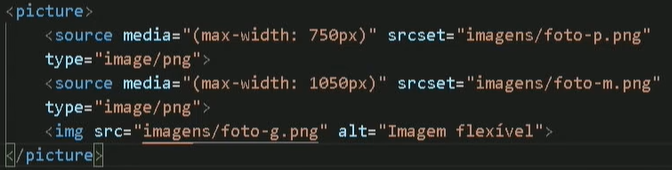
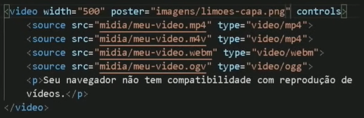

<, >, ®, ©, ≶, ⌖, ™, ▵, €, £, ℜ, ¥, ¢, Δ, ↑
OBS: Tem no material da aula.
Você deverá entrar no emojipedia.org.
Logo depois deverá, ou copiar a imagem e jogar dentro do código (pode não funcionar para alguns), ou copiar o ponto de código (Exemplo: U+1F642, então copia o 1F642)
🙂 ou 🙂 <- Pelo Hexadecimal (VER NO CÓDIGO FONTE)
🚀 ou 🚀 <- Pelo Hexadecimal (VER NO CÓDIGO FONTE)
Para colocar o Favicon, use: <link rel="shortcut icon[não sei a definição]" href="[link da imagem .ico]" type="image/x-icon[não sei a definição]">. Use na aba <head>.
Para procurar o Favicon, pode usar o site: www.iconarchive.com, e baixar a versão ICO.
Também pode usar favicon.io e favicon.cc
Para carregar imagens, use: <img src="[link da imagem]" alt="[nome alternativo da imagem (opicional e importante)]" height="[altura (opicional)]" width="[largura (opicional)]" >
Pode usar outros parâmetros também.
Ideal usar um editor de imagem para escolher o tamanho certo (em vez de usar height e width), como GIMP ou Photoshop.
Para arquivos em site, o ideal é deixar na mesma pasta do index.html, ai basta digitar o nome do arquivo. Ou colocar em uma pasta, nesse caso deverá indicar a pasta, como: Pasta_Imagens/imagem001.png.
Para arquivos na internet, o endereço da imagem.
OBS: Depois colocar esses três tipos de imagens.
Para abrir uma imagem em vários dispositivos diferentes, ou a imagem variar conforme você mexa no tamanho do navegador, use: <picture>.
E dentro de picture, insira a imagem usando a tag <img>.
Mas, como queremos usar também para dispositivos diferentes, devemos ter a mesma imagem em tamanho menor. Com isso, basta editar em algum editor de foto (como GIMP ou Photoshop) para tamanhos menores, como, por exemplo, para computadores, tablets ou celulares.
Depois, para inserir a imagem desejada em tamanhos menores, devemos usar uma condição. Para isso, use: <source media="(max-width:[tamanho máximo da tela])"" srcset="[link da imagem (em tamanho diferente)]" type="[tipo de imagem (como é imagem: image/png OU image/jpeg)]">
Exemplo abaixo:

OBS1: Os <source> tem que estar em ordem, ou seja, do menor para o maior.
OBS2: O width significa largura. Com isso, ajuda no celular caso o usuário deite o seu aparelho. height significa altura.
Para usar Icones, utilize o FontAwesome.
No <head>, coloque o seu kit (link). E para o ícone, copie o cole o código <i> aonde quiser que ele fique.
Também da para baixar um arquivo (download) e chamnar ele no link.
Para colocar vídeos, use: <video src="[link]" controls>
Parâmentros não necessários:
width="[tamanho do vídeo]"poster="[link da imagem para servir de THUMB (poster)]"autoplay: Inicia o vídeo automaticamente.loop: Fica repetindo o vídeo.Caso queira utilizar vários tipos de vídeos (pois existem navegadores que não aceitam certos tipos de tipos), use: <source>. Lembrando a ordem de preferência, de cima para baixo. Como abaixo:

Os principais tipos de vídeos são: video/mp4, video/webm e video/ogv. Para consultar essa lista, use: https://www.iana.org/assignments/media-types/media-types.xhtml
Para converter os vídeos e deixar mais leve, pode baixar o aplicativo HandBrake. Ou usar outros, até mesmo na internet.
Para colocar vídeos de um hospeideiro de vídeos, como o YouTube, use:
OBS1: No Youtube, ao escolher o vídeo e clicar em compartilhar, ele já oferece uma Aba Incorporar que cria um código HTML já pronto para o uso. Para isso o cliente pode disponibilizar o vídeo dele no YouTube para que possa ser extraído de lá. E ao invés de usar dados do próprio site, usa o do YouTube.
OBS2: Caso queria um vídeo restrito, pode guardar ele no Vimeo.
Para colocar imagem ou vídeo no centro, use: display: block;, para transformar em bloco. E, depois, use: margin: auto;
Para reproduzir áudios, use: <audio src="[link]" controls autoplay>
Existem uns parâmetros, como
<audio preload:"[configuração]"> que as configurações são: auto, metadata e none.
<audio controls>
<audio loop> Como o nome diz, ele fica voltando no loop.
Mas o código acima é limitado (alguns navegadores não aceitam). Para isso, dentro de <audio>, use: <source src"[link]" type="[tipo (para MP3: audio/mpeg)]">
Existem varios tipos, como, por exemplo, audio/mpeg, audio/ogg, audio/wav. Para consultar essa lista, use: https://www.iana.org/assignments/media-types/media-types.xhtml
Aí poderá usar vários <source> para outros. Respeitando a ordem, de cima para baixo.
Você pode baixar áudios (sons) no YouTube em uma parte reservada para isso. Ou em outros.
Geralmente vem em formato MP3: .mp3
OBS: Tome cuidado com os Direitos Autorais. Procure pegar os aúdios que são livres.
Para criar um iframe, use: <iframe>


OBS: Existem sites que tem proteção contra iframe.